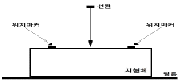
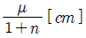
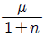
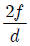

방사선비파괴검사산업기사(구) (2011-10-02 기출문제)
1과목: 방사선투과검사 시험
1. 방사선이 시험체에서 산란할 때 입사선과 이루는 각이 몇 도 이상인 것을 후방 산란선이라고 하는가?
- 45°
- 90°
- 125°
- 180°
(정답률: 알수없음)

2. 다음 중 필름특성곡선(H&D Curve)으로 알 수 없는 것은?
- 관용도
- 필름감도
- 불선명도
- 필름 콘트라스트
(정답률: 알수없음)
3. 방사선 투과검사에서 시험체 실물과 동일하고 선명한 투과영상을 얻기 위한 조건으로 옳지 않은 것은?
- 선원 크기는 가능한 작을 것
- 선원의 조사방향은 필름면과 수직일 것
- 선원은 시험체와 필름으로부터 기능한 한 멀리 떨어질 것
- 선원-시험체간 거리 대비 시험체-필름간 거리의 비율을 가능한 한 크게 할 것
(정답률: 알수없음)
4. 다음 중 반감기가 가장 긴 방사성동위원소는?
- Co-60
- Ir-192
- Tm-170
- Cs-137
(정답률: 알수없음)
5. 다음 중 에너지에서 물질로 변환(①)되거나 물질에서 에너지로 변환(②)하는 관계를 나타내는 현상끼리 바르게 짝지은 것은?
- ①내부전환, ②전자포획
- ①전자포획, ②전자쌍 생성
- ①양전자 소멸, ②내부전환
- ①전자쌍 생성, ②양전자 소멸
(정답률: 알수없음)
6. 파장이 6.6×10-12m인 X선의 에너지는 약 얼마인가? ( 단, 프랑크상수(h)는 6.6×10-34Jㆍs, 1eV는 1.6×10-19J, 광속은 3×108m/s이다.)
- 155keV
- 188keV
- 224keV
- 276keV
(정답률: 알수없음)
7. 와전류가 얼마만큼 깊게 내부를 흐르는가를 측정하는데에 침투깊이라는 양이 사용된다. 그 밀도가 표면값의 얼마로 저하되는 곳의 깊이를 표준침투깊이(Standard depth penetration)라고 하는가?
- 25%
- 30%
- 37%
- 45%
(정답률: 알수없음)
8. 초음파탐상검사에서 비파괴검사 평가결과의 신뢰성 향상을 위해 고려되어야 할 사항이 아닌 것은?
- 최적의 비파괴시험방법 및 조건의 적용
- 인간의 정보전달율의 한계를 극복하기 위한 수동검사의 적극 활용
- 비파괴검사 공정의 자동화를 통한 검사장비의 전문가 시스템(Expert System)화
- 비파괴검사 기술자 자격인정 및 인증제도의 확립으로 시간적 재현성이 있는 검사결과 확보
(정답률: 알수없음)
9. 누설검사법 중 대형 용기나 저장조 검사에 이용되지만 누설위치의 측정에는 적합하지 않은 검사법은?
- 기포누설시험
- 헬륨누설시험
- 할로겐누설시험
- 압력변화누설시험
(정답률: 알수없음)
10. 여러 종류의 비파괴검사의 특이성에 대한 기술이다. 다음중 틀린 것은?
- 자분탐상검사는 시험체를 자화시켜 Cu, Al 등 표면 및 표면직하의 결함을 검출하는 방 법이다.
- 초음파 탐상검사는 초음파를 이용하여 구조물의 두께 결함의 위치, 재료의 기계적 성질을 검출하는 방법이다.
- 방사선투과검사는 방사선 투과량에 따른 불연속 부위의 감광정도로, 불연속의 크기 및 위치를 검출하는 방법이다.
- 음향방출시험은 재료가 파괴되는 과정에서의 미세한 결함의 응력파를 검출하여 결함의 유무 및 위치를 검출하는 방법이다.
(정답률: 알수없음)
11. 방사선 투과검사의 적용이 가장 곤란한 경우는?
- 결함 높이의 측정
- 경년 변화의 평가
- 구조물의 용접부 시험
- 콘크리트 내부 구조 시험
(정답률: 알수없음)
12. 침투탐상검사에서 침투제의 적심성에 대한 설명으로 틀린것은?
- 접촉각 Ɵ가 0°이면 이상적인 적심성이라 한다.
- 접촉각 Ɵ가 180°이면 적심성이 없다고 본다.
- 표면장력이 작을수록 적심성은 나쁘다.
- 침투액이 결함으로 침투하는 중요한 성질이다.
(정답률: 알수없음)
13. 감마(γ)선 투과검사의 특징을 설명한 것 중 틀린 것은?
- 이동성이 좋다.
- 외부 전원이 필요 없다.
- 360°또는 일정 방향으로 투사의 조절이 가능하다.
- 투과 능력은 사용하는 동위원소에 따라 모두 동일하다.
(정답률: 알수없음)
14. 온도가 일정할 때 일정량의 기체가 차지하는 부피는 압력에 반비례하는 법칙은?
- 샤를의 법칙
- 보일의 법칙
- 보일-샤를의 법칙
- 아보가드로의 법칙
(정답률: 알수없음)
15. 다음 비파괴검사법 중 시험체의 두께측정에 이용할 수 없는 것은?
- 방사선투과시험법
- 초음파탐상시험법
- 자분탐상시험법
- 와전류탐상시험법
(정답률: 알수없음)
16. 침투탐상시험의 특징을 설명한 것 중 옳은 것은?
- 표면직하 및 내부 결함만 검출이 가능하다.
- 결함의 내부형상이나 크기는 평가가 가능하다.
- 결함 폭의 확대율이 낮아 미세 결함의 검출능력이 우수하지 못하다.
- 모든 재료의 적용이 가능하지만 다공질 재료에는 적용이 곤란하다.
(정답률: 알수없음)
17. 누설시험법에서 가압법은 시험압력이 시험체의 최대허용 압력의 약 몇 %를 초과하지 않는 범위로 하는가?
- 25%
- 35%
- 45%
- 55%
(정답률: 알수없음)
18. 비파괴검사 기술자 자격인정 및 인증을 규정하고 있는 규격은?
- KS B ISO 9712
- KS B ISO 3⑤7
- KS B ISO 3⑤8
- KS B ISO 5577
(정답률: 알수없음)
19. 비파괴검사의 이용 목적과 가장 관계가 먼 것은?
- 건전성의 확보
- 제조기술의 개량
- 신뢰성의 향상
- 측정기술의 보안
(정답률: 알수없음)
20. 두께 50mm압연제품의 내부 균열 등 미세한 결함 용입부족 및 융합불량에 대한 검출감도가 가장 우수할 것으로 기대되는 비파괴 검사법은?
- 침투탐상검사
- 자분탐상검사
- 방사선투과검사
- 초음파탐상검사
(정답률: 알수없음)
2과목: 방사선투과검사 시험
21. 용접부와 같은 공업용 방사선 투과검사에 사용되는 다음 동위원소 중 에너지 준위가 가장 낮은 것은?
- Co-60
- Cs-137
- Ir-192
- Tm-170
(정답률: 알수없음)
22. 선원과 필름간 거리가 60cm일 때 노출시간이 60초이었다면 같은 조건에서 선원과 필름간 거리가 30cm일 때의 노출 시간은 얼마인가?
- 15초
- 30초
- 60초
- 240초
(정답률: 알수없음)
23. 필름 스크라치에 의한 의사지시를 확인하는 방법으로 적절한 것은?
- 농도계를 사용하여 확인한다.
- 필름의 양면을 암실용 암등으로 비춰본다.
- 필름의 양면을 반사광을 이용하여 비춰본다.
- 필름의 양면을 자외선 조사등으로 비춰본다.
(정답률: 알수없음)
24. 크기가 일정한 관전압 하에서 관전류를 변화시킬 때 발생한 X선의 특성에 관한 설명으로 옳지 않은 것은?
- 관전류에 따라 최단 파장이 변한다.
- 관전류에 따라 각 파장의 강도가 변한다.
- 백색 X선의 강도는 관전류의 크기에 비례한다.
- 각 파장의 분포는 관전류에 관계없이 일정하다.
(정답률: 알수없음)
25. X선관(tube)의 기본 구조에 포함되지 않는 것은?
- 표적
- 필라멘트
- 집속컵
- 콜리메타
(정답률: 알수없음)
26. γ선 투과장치에서 다른 촬영조건들이 동일할 때 가장 두꺼운 시험편 촬영에 적합한 방사성 동위원소는?
- Tm-170
- Ir-192
- Co-60
- Cs-137
(정답률: 알수없음)
27. 투과사진을 판독하기 전에 투과사진의 상질을 평가하여야한다. 다음 중 상질평가를 위해 확인하여야 할 사항이 아닌것은?
- 필름의 종류
- 투과도계 식별도
- 시험부의 사진농도
- 흠이나 현상얼룩의 유무
(정답률: 알수없음)
28. 주강품에 탕구, 냉금 등이 부적당한 경우 방사선 투과사진상 한 장소에 큰 공동부를 만들거나 주물의 중심을 따라 발생되며 약간 검게 밀집되어 수지상 비슷한 영상이 나타났다면 예상되는 결함의 종류는 무엇인가?
- 실버(Silver)
- 수축관(Shrinkage)
- 미스런(Misrun)
- 열간터짐(Hot tear)
(정답률: 알수없음)
29. 직경이 2m인 압력용기의 전 원주 용접부에 대해 1회 노출로 방사선 투과검사를 하려 한다. 다음 중 투과도계의 위치와 마커(납 숫자)의 위치로 적합한 것은?
- 투과도계, 마커 모두 압력용기 외부에 부착한다.
- 투과도계, 마커 모두 압력용기 내, 외부 2군데에 부착한다.
- 투과도계는 압력용기 내부에, 마커는 압력용기 외부에 부착한다.
- 투과도계는 압력용기 외부에, 마커는 압력용기 내부에 부착한다.
(정답률: 알수없음)
30. 용접부 방사선 투과검사시 선형 투과도계 사용에 관한 설명으로 옳은 것은?
- 용접선 방향으로 중앙근처에 위치시킨다.
- 용접단으로부터 5mm 내지 10mm 떨어져 놓는다.
- 용접부위에 관계없이 제품의 모재 부위에 놓는다.
- 용접 부위에 가는 선을 밖으로 하여 유효길이의 양 끝에 놓는다.
(정답률: 알수없음)
31. 방사선 투과검사에 사용되는 방사성동위원소의 비방사능(specific activity)에 관한 설명으로 옳은 것은?
- 비방사능이 높을수록 투과력이 강하다.
- 비방사능이란 단위체적당 방사능의 세기를 의미한다.
- 비방사능이 높으면 내부에서의 산란이 적으므로 깨끗한 상질을 얻을 수 있다.
- 비방사능이 높으면 같은 강도의 감마선에 노출되기 위해서는 선원의 크기가 작아야 하므로 노출시간이 길어질 수 있다.
(정답률: 알수없음)
32. 방사선 투과검사시 형광증감지는 연박증감지에 비해 어떤 장점이 있는가?
- 노출시간을 단축시킨다.
- 산란방사선에 효과적이다.
- 영상의 선명도가 증가된다.
- 경금속의 검사에 적용이 가능하다.
(정답률: 알수없음)
33. 납 증감지를 사용할 때 순수한 납 대신에 6% 안티몬과 94%의 납으로 된 납합금 재료를 증감지로 사용하는 주된이유는?
- 명료도를 단축시킨다.
- 산란방사선에 효과적이다.
- 영상의 선명도가 증가된다.
- 경금속의 검사에 적용이 가능하다.
(정답률: 알수없음)
34. [그림]과 같이 촬영배치 되었을 때 위치마커의 간격이 촬영 후 필름상에서 1.2배로 커졌다면 이 시험체의 두께는 얼마인가? ( 단, 선원과 시험체 사이의 거리는 500mm, 선원은 점선원으로 간주한다.)

- 50mm
- 100mm
- 125mm
- 150mm
(정답률: 알수없음)
35. 원자번호와 별로 관계가 없이 특정의 수소(H) 등 가벼운 물질에는 흡수가 아주 크며, 철(Fe) 등 중금속에는 흡수가 작은 특성을 이용하여 두꺼운 금속제의 용기나 구조물 내부에 존재하는 가벼운 수소화합물의 검출에 사용되는 방사선 투과시험은?
- 제로 래디오그래피
- 중성자 래디오그래피
- 실시간 래디오그래피
- 스테레오 래디오그래피
(정답률: 알수없음)
36. 다음 중 방사선 투과검사에서 방사선이 시험체에 흡수되는 정도에 가장 적게 영향을 미치는 인자는?
- 시험체의 두께
- 시험체의 결정립
- 시험체의 밀도
- 시험체의 원자번호
(정답률: 알수없음)
37. 주조결함 중 주형 내에서 용탕의 2개의 흐름이 합류하여도 금속의 산화된 표면이 용융을 방해하여 그 경계가 완전히 융합하지 못하므로 생기는 결함은?
- 콜드셧
- 주탕불량
- 혼입물
- 다공성 수축
(정답률: 알수없음)
38. 방사선 투과검사에서

값이 각각 0.12, 0.19, 0.22 및 0.76이었다. 이때 투과사진의 콘트라스트가 가장 큰
값은?- 0.12
- 0.19
- 0.22
- 0.76
(정답률: 알수없음)
39. 다음 중 방사선투과검사에 사용되는 노출도표는 어떤 방법에 의해 작성될 수 있는가?
- 투과도계를 사용하여 작성할 수 있다.
- step wedge를 사용하여 작성할 수 있다.
- parallax 법을 사용하여 작성할 수 있다.
- pin hole 법을 사용하여 작성할 수 있다.
(정답률: 알수없음)
40. 투과도계에 관한 설명으로 옳지 않은 것은?
- 유공형(hole type)과 선형(wire type)이 있다.
- 상질지시계(image quality indicator)라고도 한다.
- 방사선 투과검사 기법의 적정성을 점검하기 위해 사용된다.
- 방사선 투과사진의 품질 수준을 폭넓게 평가하는 데는 유공형 투과도계가 더 유리하다.
(정답률: 알수없음)
3과목: 방사선안전관리, 관련규격 및 컴퓨터활용
41. 강 용접 이음부의 방사선 투과시험방법(KS B 0845)에서 강판 맞대기 용접 이음부의 촬영시 투과도계 사용에 관한 설명으로 옳은 것은?
- 시험부 유효길이의 양 끝에 각 1개를 놓는다.
- 투과도계의 굵은 선이 시험부 양 끝 바깥쪽이 되도록 놓는다.
- 선원측 반대면인 시험부 바닥에 용접 이음부를 걸치지 않게 놓는다.
- 투과도계와 필름 간 거리가 식별 최소 선지름의 10배 미만으로 떨어지면 투과도계를 필름 쪽에 둘 수 있다.
(정답률: 알수없음)
42. 강 용접 이음부의 방사선 투과시험방법(KS B 0845)에 따라 투과사진에 의하여 검출된 결함이 제3종의 결함인 경우, 몇 류로 분류하는가?
- 1류
- 2류
- 3류
- 4류
(정답률: 알수없음)
43. 강 용접 이음부의 방사선 투과시험방법(KS B 0845)에 따라 방사선 투과시험시 시험부의 유효길이가 25cm일 때 강용접부를 A급으로 촬영하고자 한다. 선원과 투과도계간의 거리는 최소 얼마 이상이 되어야 하는가? (단, f는 선원치수, d는 투과도계의 식별 최소 선지름이며,

는 5라고 가정한다.)- 50cm
- 75cm
- 125cm
- 150cm
(정답률: 알수없음)
44. 스테인리스강 용접부의 방사선 투과시험방법 및 투과사진의 등급분류방법(KS D 0237)에 의한 투과도계의 식별도는 약 얼마인가? (단, 모재의 두께는 25mm 이중벽 촬영에 의한 양쪽 덧붙임이 있는 평판 맞대기 이음 용접 부위를 방사선 투과검사한 결과 필름상에 나타난 인정된 투과도계의 최소선의 지름은 0.4mm이었다.)
- 0.16%
- 0.74%
- 1.16%
- 1.74%
(정답률: 알수없음)
45. 다음 중 감마선의 에너지를 나타내는 단위는?
- KeV
- R(Roentgen)
- Ci(Curie)
- R/h(Roentgen per hour)
(정답률: 알수없음)
46. 방사성 폐기물 중 고준위 방사성 페기물이라 함은 반감기가 20년 이상의 알파선 방출핵종으로, 그 농도가 몇 Bq/g 이상인 것을 의미하는가?
- 3000Bq/g
- 4000Bq/g
- 5000Bq/g
- 6000Bq/g
(정답률: 알수없음)
47. 강 용접 이음부의 방사선 투과시험방법(KS B 0845)에 따라 모재 두께가 10mm이고, 투과 두께를 측정하기 곤란한 경우 한쪽 덧붙임이 있는 강 용접부의 평판 맞대기 이음에 적용하여야 하는 계조계는?
- 15형
- D10형
- S형
- P1형
(정답률: 알수없음)
48. 인체의 피폭선량을 나타낼 때 흡수선량에는 방사선 가중치를 정하는데 이 방사선 가중치가 잘못된 것은?
- 광자 : 1.0
- α입자 : 20
- 10keV 미만의 에너지를 가지는 중성자 : 10
- 2Mev 초과의 에너지를 지닌 반조양자 이외의 양자 : 5
(정답률: 알수없음)
49. 1 Ci를 SI 단위로 바르게 나타낸 것은?
- 3.7×1010R
- 2.58×10-4C/
- 0.001293g/C
- 3.7×1010Bq
(정답률: 알수없음)
50. Ir-192 1Ci 로부터 1m떨어진 곳의 매시간당 조사선량은 얼마인가?
- 0.25R/h
- 0.55R/h
- 1.00R/h
- 1.35R/h
(정답률: 알수없음)
51. 보일러 및 압력용기에 대한 방사선 투과검사(ASME Sec.V, Art.2)에 따라 선형투과도계를 사용할 때 이 투과도계 내에는 몇 개의 바늘로 구성되어 있는가?
- 4
- 5
- 6
- 7
(정답률: 알수없음)
52. 원자력법 시행령에서는 재해로 인하여 안전성의 위협이 있거나 방사선작업종사자가 안전운영과 관련된 직무를 위협받을 경우에는 그 원인을 제거하고 피해의 확대방지를 위한 조치를 취하도록 규정하고 있고, “방사선방호 등에 관한 기준고시”에서는 방사선 긴급작업시 선량을 제한하고 있다. 이와 같이 불가피한 작업에 참여하는 자에 대한 유효선량과 피부의 등가선량은 얼마까지 허용할 수 있는가?
- 유효선량 : 0.5Sv, 피부의 등가선량 : 5Sv
- 유효선량 : 5Sv, 피부의 등가선량 : 25Sv
- 유효선량 : 5Sv, 피부의 등가선량 : 50Sv
- 유효선량 : 25Sv, 피부의 등가선량 : 50Sv
(정답률: 알수없음)
53. 보일러 및 압력용기에 대한 방사선 투과검사(ASME Sec.V, Art.22 SE-94)에서 투과도계의 두께는 요구되는 상질에 따라 결정된다. 63.5mm 두께의 철을 검사한다면 2-2T에 해당하는 투과도계의 두께로 옳은 것은?
- 0.64mm
- 1.27mm
- 6.35mm
- 12.7mm
(정답률: 알수없음)
54. 질량감쇠계수(μm)와 선흡수계수(μl)와의 관계를 바르게 표현한 것은? (단, ρ는 밀도, A는 원자량, Z는 원자번호이다.)
- Aㆍμm=μl
- ρㆍμl=μm
- Zㆍμl=μm
- ρㆍμm=μl
(정답률: 알수없음)
55. 감마선이나 엑스선의 차폐시 고려되어야 할 사항이 아닌 것은?
- 차폐 재질의 종류
- 차폐 재질의 두께
- 차폐 재질의 밀도
- 차폐 재질의 강도
(정답률: 알수없음)
56. 웹 서버와 클라이언트가 통신을 수행하기 위해서 사용하는 프로토콜이며, 웹문서뿐만 아니라 일반 문서, 음성, 영상, 동영상 등 다양한 형식의 데이터를 전송할 수 있는 통신규약은?
- HTML
- XML
- ADSL
- HTTP
(정답률: 알수없음)
57. PC 운영체제(Operating system)의 기능으로 틀린 것은?
- 사용자와 컴퓨터 간의 인터페이스 제공
- 시스템의 효율적인 운영 및 관리
- 자원 스케줄링 및 주변장치 관리
- 원시프로그램을 기계어로 번역
(정답률: 알수없음)
58. 인터넷 상에서 사용자가 원하는 키워드를 입력하여 사이트를 찾고자 할 때 사용할 프로그램은?
- 즐겨찾기
- 검색엔진
- 목록보기
- 인터넷옵션
(정답률: 알수없음)
59. 컴퓨터 작업도중 발생할 수 있는 인터럽트의 발생 원인이 아닌 것은?
- 기계 착오 인터럽트
- 외부 인터럽트
- 프로그램 인터럽트
- 계산에 의한 인터럽트
(정답률: 알수없음)
60. 컴퓨터 바이러스 대처 방법으로 거리가 가장 먼 것은?
- 쓰기 방지 장치가 되어 있는 저장 장치도 감염될 수 있으니 사용 시 쓰기 방지 해 둘 필요가 없다.
- 디스켓 사용 시 바이러스 감염여부를 확인한다.
- 통신망을 이용하여 다른 컴퓨터 시스템에서 내 컴퓨터로 데이터 이동 시 바이러스 감염여부를 확인한다.
- 바이러스 활동 날짜를 확인하고 시스템에 대한 사전검사를 실시한다.
(정답률: 알수없음)
4과목: 금속재료 및 용접일반
61. 탄소강에 함유되는 원소의 영향 중 Fe와 화합하여 생성된 화합물로 인하여 적열취성의 원인이 되며, 함유량이 0.02% 이하 일지라도 연신율, 충격치 등을 저하시키는 원소는?
- Mn
- Si
- P
- S
(정답률: 알수없음)
62. 베어링 합금 중 베빗메탈(babbit metal)이란?
- Pb계 화이트메탈
- Sn계 화이트메탈
- Cu계 화이트메탈
- Cd계 화이트메탈
(정답률: 알수없음)
63. 46%Ni-Fe합금으로 열팽창계수 및 내식성에 있어서 백금을 대용할 수 있어 전구봉입선 등으로 사용 가능한 것은?
- 인바(Invar)
- 엘린바(Elinva)
- 퍼멀로이(Permalloy)
- 플레티나이트(Platinite)
(정답률: 알수없음)
64. 다음 중 순철의 변태점이 아닌 것은?
- A1
- A2
- A3
- A4
(정답률: 알수없음)
65. 면심입방결정의 슬립면과 슬립방향으로 옳은 것은?
- {110}, ＜101＞
- {111}, ＜110＞
- {110}, ＜110＞
- {101}, ＜110＞
(정답률: 알수없음)
66. 마그네슘(Mg)에 대한 설명 중 틀린 것은?
- 상온에서 비중은 약 1.74이다.
- 구상흑연주철의 첨가제로 사용된다.
- 절삭성이 양호하고 알칼리에 잘 견딘다.
- 산화가 되지 않고 고온에서 발화하지 않는다.
(정답률: 알수없음)
67. 경질 자성 재료로서 자성이 뛰어나고 분말 야금법에 의해 제조된 자석은?
- Si강판
- 퍼멀로이
- 센더스트
- Nd자석
(정답률: 알수없음)
68. 볼트, 기어 등을 대량 생산하는 데 가장 적합한 소성가공법은?
- 단조
- 압출
- 전조
- 프레스
(정답률: 알수없음)
69. 백주철이 되도록 주조한 다음 흑연화 열처리 또는 탈탄을 하여 연성을 크게 한 재질의 주철은?
- 가단주철
- 회주철
- 냉경주철
- 구상흑연주철
(정답률: 알수없음)
70. 주조한 상태 그대로 연삭하여 사용하는 합금으로 Co를 주성분으로 하며 열처리 하지 않아도 충분한 경도를 가지며, 600℃이상에서 고속도강보다 단단한 공구강은?
- 탄소강
- 스텔라이트
- 게이지강
- 구상흑연주철
(정답률: 알수없음)
71. 가스용접을 하기 전 병의 무게는 57kg이었다. 용접 후 병의 무게가 53kg이라면 사용한 용해아세틸렌 가스의 양은 몇 리터인가? (단, 15℃ 1기압하에서 아세틸렌가스 1kg의 용적은 9⑤리터이다.)
- 2250리터
- 2620리터
- 3250리터
- 3620리터
(정답률: 알수없음)
72. 피복 아크 용접 작업 시 직류 정극성(DCSP)에 비교한 직류역극성(DCRP)의 특성은?
- 비드 폭이 넓다.
- 모재의 용입이 깊다.
- 용접봉의 녹음이 느리다.
- 일반적으로 후판에 많이 쓰인다.
(정답률: 알수없음)
73. 교류 아크 용접기 종류 중 AW-300의 정격사용율은 몇 %인가?
- 30%
- 40%
- 50%
- 60%
(정답률: 알수없음)
74. 필릿 용접의 기본 기호로 맞는 것은?
(정답률: 알수없음)
75. 용접 흠의 종류 중 양면 용접이 가능한 경우에 용착금속의량과 패스 수를 줄일 목적으로 사용되며, 모재가 두꺼울수록 유리한 용접 홈은?
- I형
- V형
- K형
- H형
(정답률: 알수없음)
76. 원판상의 롤러 전극사이에 용접물을 끼워 전극에 압력을 주면서 전극을 회전시켜 모재를 이동하면서 용접하는 방법으로 주로 기밀, 수밀을 필요로 하는 이음에 적용되는 전기저항 용접법은?
- 심 용접법
- 플래시 용접법
- 업셋 용접법
- 테르밋 용접법
(정답률: 알수없음)
77. 저항용접 중 점용접 조건의 3대 요소로만 올바르게 구성된 것은?
- 전극의 재료, 용접전압, 용접전류
- 용접전압, 용접전류, 전극의 가압력
- 용접전압, 용접전류, 통전시간
- 용접전류, 용접시간, 전극의 가압력
(정답률: 알수없음)
78. 방사선으로 촬영한 사진이 기준 이상으로 되었는가를 판단하는 기구는?
- 투과도계
- 계조계
- 증감지
- 판독 테이블
(정답률: 알수없음)
79. 이산화탄소 아크 용접 시에 스패터가 많이 발생하는 원인으로 가장 거리가 먼 것은?
- 용접 조건의 부적당
- 1차 입력전압의 불균형
- 와이어 종류의 부적당
- 이음 형상의 불량
(정답률: 알수없음)
80. 용접이음이 리벳이음에 비하여 우수한 점 중 틀린 것은?
- 두께에 제한이 없다.
- 유밀(oil tight)이 우수하다.
- 수밀(wear tight), 기밀(air tight)이 우수하다.
- 이음효율이 낮다.
(정답률: 알수없음)